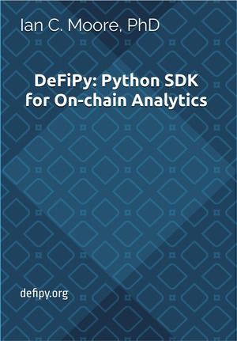
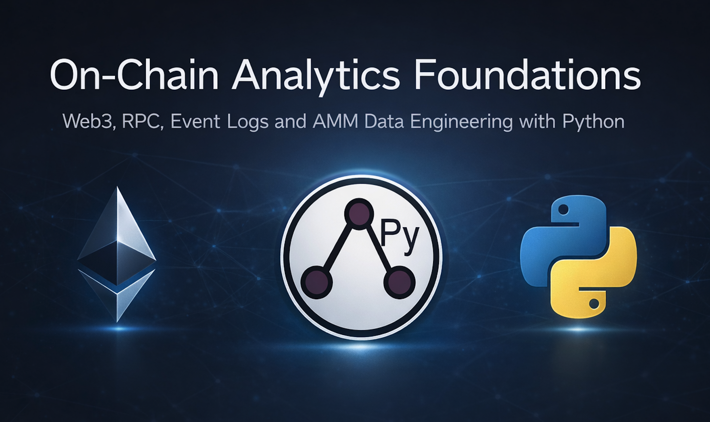

DeFiPy: Python SDK for Agentic DeFi
DeFiPy is a unified Python SDK for agentic DeFi, covering analytics, simulation, and LLM-native tool schemas for autonomous agents. Built with modularity in mind, it exposes DeFi primitives as MCP tools and lets you isolate and extend your analytics by protocol using:
For onchain event access and scripting, pair it with Web3Scout — a companion tool for decoding pool events and interfacing with Solidity contracts.
🔗 DAPX-Anchor: anchorregistry.ai/AR-2026-YdPXB5g
Where to start
Wire DeFiPy’s primitives into Claude Desktop, Claude Code, or any MCP-compatible client. 10 curated tools ship with schemas; a reference MCP server closes the end-to-end loop.
21 stateless, typed primitives across 9 categories — position analysis, risk, pool health, price scenarios, portfolio aggregation. Every primitive returns a structured dataclass.
Cross-protocol execution primitives: Join, Swap, AddLiquidity, SwapDeposit, LPQuote. Unified interface across Uniswap V2, V3, Balancer, and Stableswap.
Hand-derived AMM math for all four protocols. Full derivations for Uniswap V2 and V3 as runnable notebooks; Balancer and Stableswap reference pages with invariants and IL formulas.
Quick install
pip install defipy
Core install is pure math — no chain reads, no LLM dependencies. For MCP server, chain reads, or Foundry workflows, see Installation.
Here’s what a primitive call looks like
from defipy import AnalyzePosition
from defipy.twin import MockProvider, StateTwinBuilder
# Build a synthetic ETH/DAI Uniswap V2 pool
provider = MockProvider()
builder = StateTwinBuilder()
lp = builder.build(provider.snapshot("eth_dai_v2"))
# Ask the primitive: why is this LP position gaining or losing money?
result = AnalyzePosition().apply(
lp,
lp_init_amt=1.0,
entry_x_amt=1000,
entry_y_amt=100000,
)
print(f"Diagnosis: {result.diagnosis}")
print(f"Net PnL: {result.net_pnl:.4f}")
print(f"IL %: {result.il_percentage:.4f}")
print(f"Current val: {result.current_value:.4f}")
MockProvider ships canonical synthetic pools; StateTwinBuilder turns a snapshot into a usable exchange object; any primitive runs against it. The same pattern works against live chain state once LiveProvider ships in v2.1 — the primitives don’t care where the pool state came from.
Learning resources

📘 DeFiPy: Python SDK for On-Chain Analytics
Textbook covering AMM math, risk modeling, and agent-based simulation. Buy on Amazon →

🎓 On-Chain Analytics Foundations
Practical course on transforming raw blockchain data into Python analytics pipelines. Take the course →